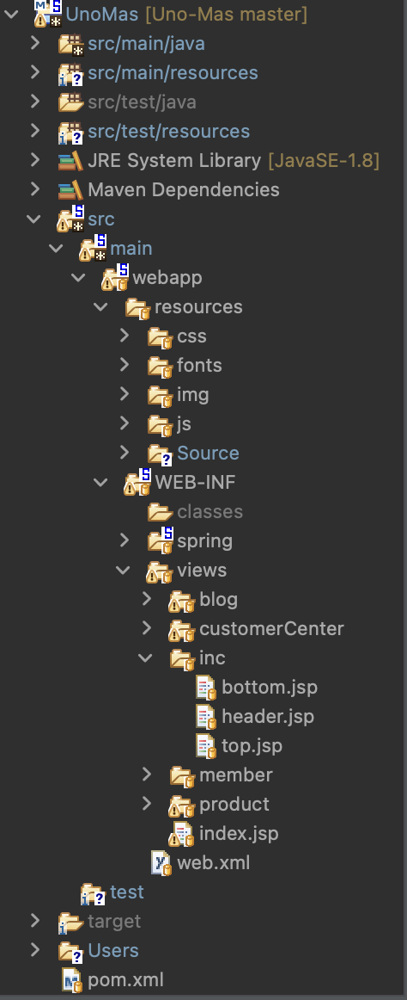

Spring MVC Project) css, js 파일 경로 설정
Spring MVC프로젝트를 배우면서 기존에 사용하던JAVA JSP프로젝트와는 약간 달라져서 헷갈리는 것이 많았는데 그 중 하나가css와js파일 경로 설정이었다.
Overview

- 한 줄 요약하자면
css와js같은 리소스 파일들은src/main/webapp/resources -
경로에 있어야 하고
html/jsp와 같은view파일들은src/main/webapp/WEB-INF/views- 경로에 존재해야 한다.
servlet-context.xml
<!-- Handles HTTP GET requests for /resources/** by efficiently serving up static resources in the ${webappRoot}/resources directory -->
<resources mapping="/resources/**" location="/resources/" />
<!-- Resolves views selected for rendering by @Controllers to .jsp resources in the /WEB-INF/views directory -->
<beans:bean class="org.springframework.web.servlet.view.InternalResourceViewResolver">
<beans:property name="prefix" value="/WEB-INF/views/" />
<beans:property name="suffix" value=".jsp" />
</beans:bean>
- 해당 내용은
servlet-context.xml파일에서도 확인할 수 있었다. 경로 문제를 겪기 전엔 봐도 모르다가 겪고 나서 알게 되니까 그제서야 눈에 들어오는 매직…